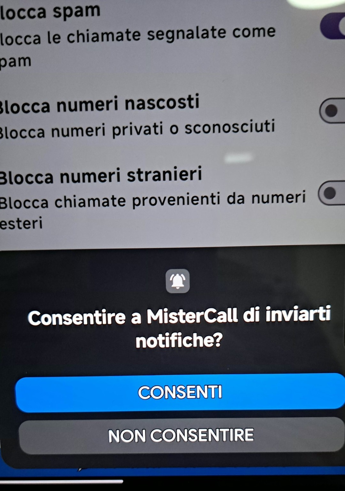
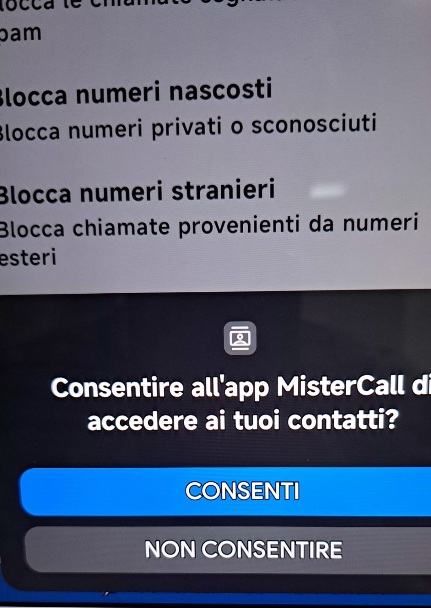
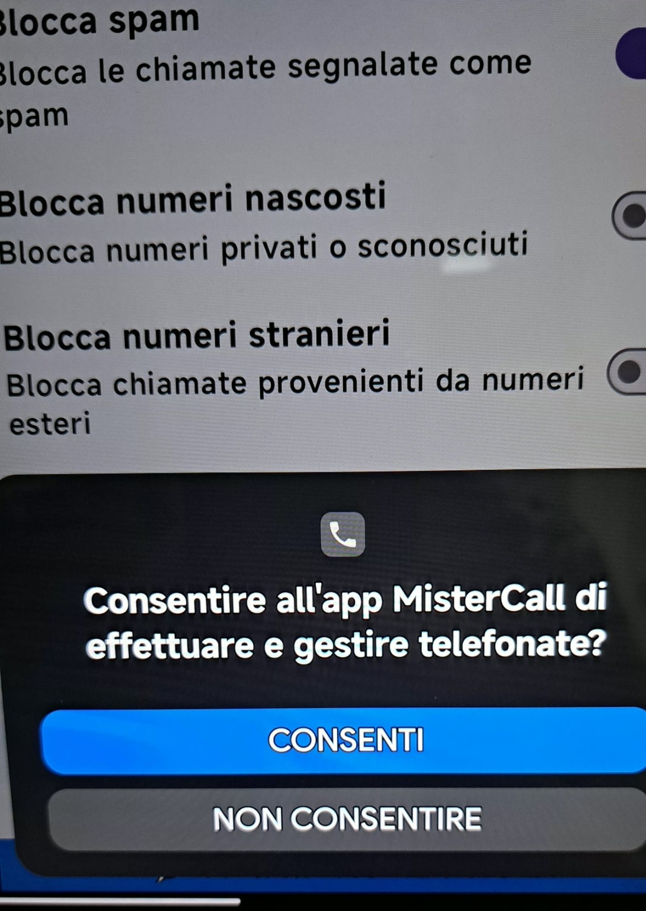
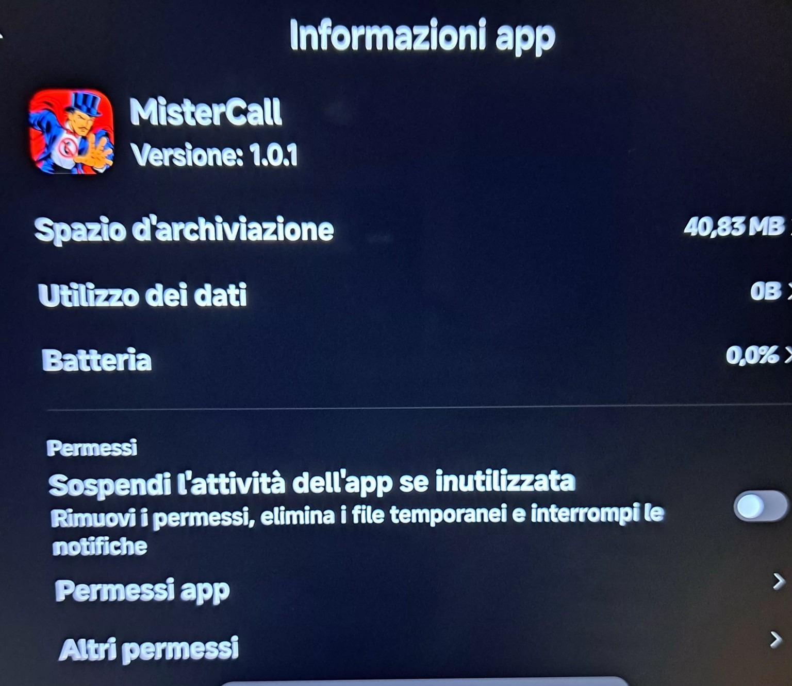
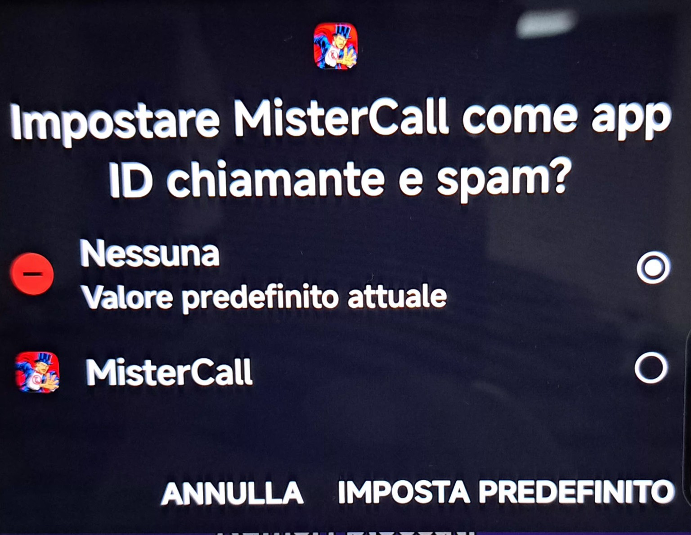

OFF
Protezione disattivata. MisterCall non applica il blocco tramite il livello di protezione.
Una guida semplice e ordinata per completare la prima configurazione e conoscere le funzioni principali dell’app Android.
MisterCall è un’app pensata per aiutarti a proteggerti dalle chiamate indesiderate, come quelle provenienti da call center e numeri riconosciuti come spam.
Questa guida accompagna passo dopo passo nella configurazione iniziale e nell’utilizzo delle funzioni disponibili.
Guida per MisterCall 1.0.6 (build 12), disponibile su Google Play. Il filtro automatico richiede Android 10 o successivo e il ruolo ID chiamante e spam.
Dalla Home, tocca Attiva MisterCall e segui le richieste di Android. Alcuni passaggi possono essere già completati.
La richiesta viene mostrata da Android durante la configurazione.
Su Android 13 o successivo, quando compare la richiesta, tocca CONSENTI. Le notifiche permettono a MisterCall di mostrarti le comunicazioni previste dall’app.

Concedi il permesso quando compare la richiesta.
Quando compare la richiesta relativa ai contatti, tocca CONSENTI. Questo permesso permette di riconoscere i numeri in rubrica: i contatti riconosciuti hanno precedenza sui filtri di blocco, anche se esteri o presenti nei Bloccati. Il silenziamento programmato usa le eccezioni che scegli separatamente. Senza il permesso, MisterCall non può riconoscerli. Il riconoscimento della rubrica avviene sul dispositivo.

Autorizzazione necessaria per le funzioni di gestione delle chiamate.
Quando Android mostra la richiesta relativa al telefono o alle chiamate, tocca CONSENTI. Questa autorizzazione è necessaria per le funzioni di gestione delle chiamate previste dall’app.

Questo passaggio viene aperto automaticamente da MisterCall.
Se la sospensione è attiva, MisterCall apre le impostazioni dell’app. Dopo aver disattivato l’opzione, torna a MisterCall per proseguire.

Ultimo passaggio della configurazione iniziale.
Dopo le autorizzazioni, Android chiede quale app usare per ID chiamante e spam. Seleziona MisterCall e premi IMPOSTA PREDEFINITO, se richiesto.

Il livello selezionato determina il comportamento della protezione.
Protezione disattivata. MisterCall non applica il blocco tramite il livello di protezione.
Protezione gratuita con filtri locali, controllo antispam online, liste personali, notifiche e silenziamento con eccezioni. Le chiamate bloccate vengono rifiutate. Include banner pubblicitari.
Abbonamento senza banner con controllo antispam rinforzato dalla consultazione di più database, gestione delle chiamate bloccate, Dual SIM, filtri numerici e backup.
Nella Home, sotto Impostazioni di blocco, puoi scegliere quali filtri attivare in BASE e MAX.
Contatti presenti in rubrica e numeri nei Sicuri non verranno bloccati. Se hai attivato Autorizza contatti in orari stabiliti, anche una chiamata consentita può essere silenziata.
In BASE e MAX, nella Home attiva Autorizza contatti in orari stabiliti per silenziare le chiamate che passano i filtri, con le eccezioni che scegli.
Durante la fascia, se l’elenco delle eccezioni è vuoto vengono silenziate tutte le chiamate che passano i filtri.
Consulta le chiamate bloccate e registrate nell’app.
Apri Numeri bloccati dalla Home per vedere un unico elenco dei numeri inseriti manualmente e di quelli registrati dai blocchi automatici. Le voci con data sono ordinate dalla più recente. Le voci storiche prive di data possono non mostrarla.
Per aggiungere un numero, seleziona il prefisso se necessario, digita o incolla il numero, tocca BLOCCA e conferma. Puoi anche usare Apri registro chiamate: nell'app Telefono apri Recenti e condividi il numero con MisterCall, oppure copialo e torna nell'app per incollarlo.
Aprire la schermata non blocca automaticamente il numero: CHIUDI o Indietro annullano l'operazione. La condivisione e il menu di selezione del testo dipendono dall'app utilizzata; se non sono supportati, usa copia/incolla o l'inserimento manuale. MisterCall non legge direttamente il registro. Se il numero è nei Sicuri, viene mostrato un avviso prima del suo spostamento nei Bloccati. I contatti riconosciuti in rubrica mantengono la precedenza sui blocchi.
Con SBLOCCA rimuovi un numero dai Bloccati e lo aggiungi ai Sicuri.
Gestisci le scelte personali sui numeri.
Apri Numeri sicuri dalla Home. Per aggiungere un numero, seleziona il prefisso se necessario, digita o incolla il numero, tocca AGGIUNGI AI SICURI e conferma. Se il numero è già nei Bloccati, SPOSTA QUI lo trasferisce nei Sicuri. Un numero entra nei Sicuri anche quando lo sblocchi dai Bloccati o rispondi NO alla domanda sulla chiamata indesiderata.
Con BLOCCA lo rimuovi dai Sicuri e lo aggiungi ai Bloccati. I contatti in rubrica vengono riconosciuti separatamente e non vengono aggiunti automaticamente a questa lista.
Le impostazioni delle notifiche sono disponibili in BASE e MAX.
In Avanzate puoi attivare o disattivare separatamente le notifiche per i nuovi numeri bloccati e quelle per un nuovo numero. Disattivare una notifica non disattiva la protezione.
Dopo una chiamata consentita da un numero sconosciuto, la notifica può aprire la schermata “CHIAMATA INDESIDERATA?”: scegli SÌ per bloccare il numero oppure NO per considerarlo sicuro. Non viene proposta per ogni chiamata: contatti, numeri già nelle liste e numeri già valutati sono esclusi. La funzione richiede Android 12 o successivo e i permessi necessari.
Se ignori la notifica senza scegliere SÌ o NO, il numero non viene considerato valutato e la domanda può ricomparire dopo una successiva chiamata.
Il consenso pubblicitario è separato dai permessi Android.
In BASE possono comparire banner nella Home, in Avanzate, in Numeri sicuri, in Numeri bloccati e nella schermata di valutazione aperta dalla notifica dopo una chiamata. I banner hanno uno spazio dedicato, separato dai pulsanti.
Quando richiesto, il modulo Google permette di scegliere le preferenze sul trattamento dei dati pubblicitari. La protezione telefonica non dipende dall’accettazione del consenso pubblicitario. In base alle scelte e alla disponibilità, possono comparire annunci limitati oppure nessun annuncio.
Per rivedere le scelte, apri Avanzate → Privacy pubblicità, quando la voce è disponibile. In assenza di rete i banner possono non caricarsi; il controllo antispam esterno richiede invece una connessione.
Consulta l’informativa privacy per i dettagli sui dati trattati, sui servizi esterni e sulle richieste inviate dal modulo Contatti.
Dalla Home, tocca MAX per vedere i piani mensile e annuale. In Italia, gli account idonei possono vedere Inizia 7 giorni gratis sul piano annuale. Prima di confermare, controlla nel riepilogo di Google Play il prezzo, la data del primo addebito e le condizioni di rinnovo.
Per annullare il rinnovo, apri Avanzate → Gestisci abbonamento oppure la sezione Abbonamenti di Google Play. Dopo una reinstallazione o un cambio di telefono, usa Ripristina acquisti dalla schermata MAX con lo stesso account Google Play dell’acquisto. Per trasferire liste e impostazioni usa Backup e ripristino.
Apri Avanzate → Gestione chiamate e scegli come gestire le chiamate bloccate.
Su Android 11 o successivo, con due SIM attive, apri Avanzate → Dualsim e attiva Attiva Dualsim. Abbina le rubriche Personale e Lavoro alle linee e tocca SALVA. Se i nomi delle SIM sono uguali o assenti, usa VERIFICA SIM NELLE IMPOSTAZIONI per identificarle.
Torna alla Home e usa Filtri per linea per gestire per ogni SIM il blocco dei numeri nascosti, stranieri e non in rubrica. La verifica dei contatti usa la rubrica associata alla linea. Se quella rubrica non è accessibile, il blocco dei numeri non in rubrica è disabilitato per la SIM interessata.
Apri Avanzate → Filtri numerici. Tocca AGGIUNGI FILTRO, scegli Inizia con, Contiene o Finisce con, inserisci le cifre e salva. Puoi attivare, modificare o eliminare le regole singolarmente. Per i numeri italiani le regole sulle cifre ignorano +39 e 0039. Per gli altri includono il prefisso del Paese.
In Prefissi internazionali puoi bloccare i prefissi selezionati o bloccare tutti i prefissi tranne quelli selezionati. Disattiva Blocca numeri stranieri per personalizzare i prefissi. Puoi anche aggiungere un Paese o un’area. I numeri senza + o 00 vengono trattati come italiani. Se scegli Blocca tutti i prefissi tranne… e lasci la lista vuota, il filtro blocca tutti i numeri, salvo contatti riconosciuti e Sicuri.
Usa PROVA UN NUMERO per controllare le regole numeriche e il blocco dei numeri stranieri. L’esito di una chiamata reale dipende anche da rubrica, liste personali e altri filtri. Una regola numerica non aggiunge da sola il numero ai Bloccati.
Apri Avanzate → Backup e ripristino. Con Esegui backup scegli dove salvare il file. Include le liste Bloccati e Sicuri con le date disponibili, le opzioni di blocco e notifica, la modalità di gestione delle chiamate, i filtri numerici e le impostazioni Dual SIM. Conserva il file in un posto sicuro perché contiene i numeri delle tue liste.
Per importarlo, tocca Ripristina backup, scegli il file e conferma Ripristina tutto. Il ripristino sostituisce le liste e le impostazioni coperte dal backup. Se importi un backup precedente privo di filtri numerici, le regole attuali vengono azzerate. Sul nuovo telefono configura di nuovo i permessi Android, il livello di protezione e gli orari di silenziamento con le relative eccezioni.
Controlli semplici prima di chiedere assistenza.
Apri le Impostazioni Android, seleziona App > MisterCall e controlla le autorizzazioni disponibili.
Usa il modulo Contatti nell’app oppure scrivi a mistercallsupport@gmail.com. Indica il modello del telefono e il problema riscontrato. Il modulo richiede email e messaggio, consente un nome facoltativo e aggiunge automaticamente la versione Android.
Puoi tornare all’app e utilizzare le funzioni disponibili nel livello di protezione scelto.